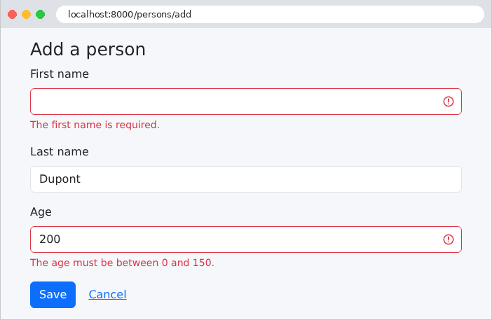
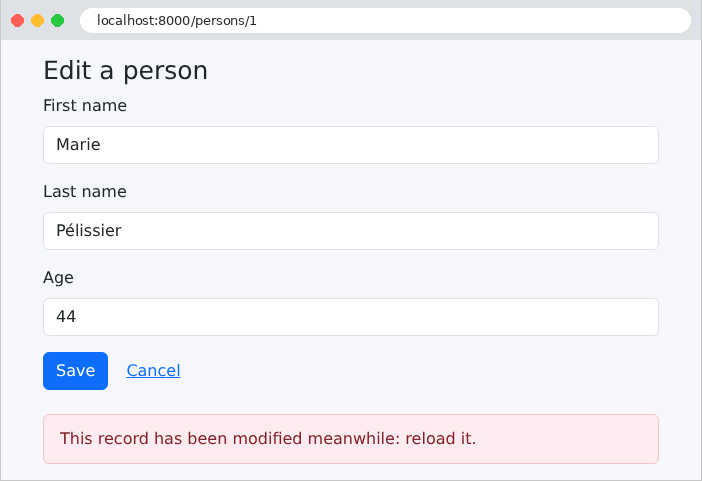
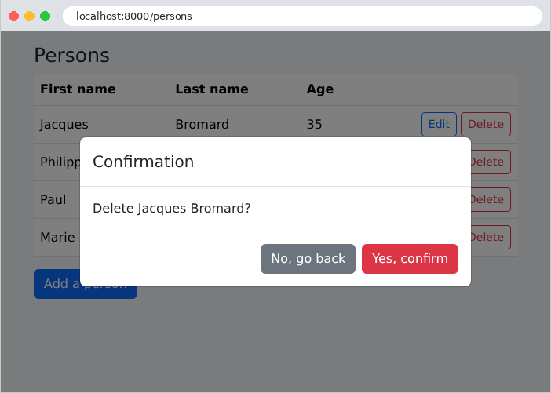
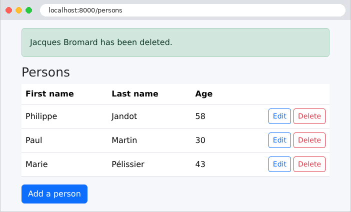

9. Arquitectura en capas y acceso a datos
Los ejemplos anteriores almacenaban sus datos en memoria o en la caché. Una aplicación real los almacena en una base de datos y se organiza en capas (véase el diagrama de la introducción):
- la capa web (controladores, formularios, vistas): lee la solicitud, llama a la capa de negocio y selecciona la vista;
- la capa de negocio: reglas de negocio;
- la capa DAO (Data Access Object): consultas a la base de datos.
Cada capa conoce únicamente la capa inferior, y el menor número posible de sus detalles: la capa web no conoce SQL, y la capa de negocio no conoce HTML. Esta separación facilita la comprensión, la prueba y la evolución de cada capa. El ejemplo 28 aplica esto a la gestión de una lista de personas: es, a menor escala, la gestión de médicos y clientes del caso de estudio.
En [PHP], el acceso a bases de datos se organiza en varias capas:
- La extensión PDO (PHP Data Objects) de [PHP] define una interfaz común para todas las extensiones de SGBD: abrir una conexión, ejecutar un comando SQL y leer filas. Cada SGBD tiene su propio controlador: [pdo_mysql] para [MySQL] (y [MariaDB]), incluido con [PHP];
- El framework DBAL (Database Abstraction Layer) agrega la gestión de conexiones y transacciones, un generador de consultas y la conversión de tipos, y traduce los errores de cada SGBD a excepciones comunes (una violación de una restricción de unicidad se convierte en una [UniqueConstraintViolationException], sea cual sea el SGBD);
- Doctrine ORM (Object-Relational Mapper) asigna clases (entidades) a tablas de la base de datos y transforma las filas recuperadas en objetos. Sigue el modelo llamado Data Mapper : las entidades son objetos ordinarios que no saben nada de la base de datos; otro objeto, el administrador de entidades, las lee y las guarda. Esta es la diferencia con [Eloquent] y su ORM (que proviene de [Laravel]), que sigue el modelo Active Record (cada objeto sabe cómo leerse y guardarse a sí mismo, [$person->save()]).
[Doctrine] no pertenece a [Symfony]: es un proyecto independiente, pero su ORM es el recomendado por [Symfony], y DoctrineBundle lo integra en la aplicación. Es el equivalente de [JDBC], [JPA], y [Hibernate] en [Java] (en el cual [Doctrine] se basó), de [Entity Framework Core] en [C#], o de [SQLAlchemy] en [Python]. Cabe señalar una consecuencia del funcionamiento de [PHP]: como nada sobrevive a la solicitud, cada solicitud abre su propia conexión a la base de datos (en su primer comando SQL) y la cierra al terminar. No hay grupo de conexiones como en [Java] o [Python]; abrir una conexión a [MySQL] en la misma máquina toma apenas una fracción de milisegundo.
El ejemplo requiere un servidor [MySQL] (o [MariaDB]) en ejecución: el apéndice explica cómo instalar uno con [Laragon].
9.1. Ejemplo 28: un sistema de gestión de personal de tres capas
9.1.1. La base de datos
La base de datos [dbpersons] se crea mediante el script SQL. Con [Laragon], se puede ejecutar, por ejemplo, en la herramienta [HeidiSQL] (menú Archivo / Ejecutar un archivo SQL), o desde la línea de comandos, en la carpeta del ejemplo:
El archivo [database/dbpersons.sql]:
- Línea 3: el script está escrito en [UTF-8]; esto se le indica al servidor para que los acentos de los datos ([Pélissier]) permanezcan intactos;
- Línea 5: el juego de caracteres [utf8mb4] acepta todos los caracteres (acentos, emojis, etc.). La intercalación [utf8mb4_unicode_ci] compara las cadenas sin distinguir mayúsculas ni acentos: para [MySQL], [pelissier], y [Pélissier] son iguales;
- línea 11: un número de versión, que se incrementa cada vez que se modifica la fila (véase «bloqueo optimista», más adelante);
- línea 17: una restricción de unicidad con nombre: la base de datos no admite dos personas con el mismo nombre y apellido.
[Doctrine] también puede crear las tablas por sí mismo, a partir de las entidades (comando [bin/console doctrine:schema:create]), o mediante migraciones: clases [PHP] que describen, paso a paso, la creación y modificación de cada tabla (biblioteca [DoctrineMigrationsBundle], comando [bin/console doctrine:migrations:migrate]). Mantenemos un script SQL, común a todas las versiones del caso de estudio, que muestra exactamente lo que contiene la base de datos.
9.1.2. Configuración
DoctrineBundle se agrega a la lista de bundles:
La conexión a la base de datos se describe en el archivo [.env] mediante una URL:
La URL [DATABASE_URL] combina todos los parámetros de conexión: el SGBD ([mysql]), el nombre de usuario y la contraseña ([root], sin nada después de [:]), el host y el puerto, y finalmente el nombre de la base de datos. Si su servidor tiene contraseña, ingrésela después de [:] ([root:secret@...]). Después de [?] siguen dos parámetros: [serverVersion], la versión del servidor ([Doctrine] adapta el SQL que genera a cada versión; para [MariaDB], por ejemplo, escribiríamos [serverVersion=10.11.2-MariaDB]), y [charset], el juego de caracteres usado para la comunicación con el servidor, que es el de la base de datos. La configuración de DoctrineBundle:
- línea 5: la conexión. El prefijo [resolve:] reemplaza las referencias a otros parámetros ([%...%]) en el valor de la variable, si las hay;
- línea 7: en modo de depuración, cada comando SQL se escribe en el registro, que podemos ver en la consola (ejemplo 24). Este es también el valor por defecto;
- líneas 10–15: las entidades son las clases de la carpeta [src/Entity], cuyo espacio de nombres comienza con [App\Entity]; su asignación a las tablas se describe mediante atributos [PHP].
Los demás archivos de configuración son los del ejemplo 21: la sesión, la protección anti-CSRF y los métodos PUT y DELETE ([framework.yaml]), así como el tema de formularios [Bootstrap] ([twig.yaml]). No hay nada más que configurar: las clases de las tres capas las crea el contenedor de [Symfony], que inyecta en cada una la capa inferior (el controlador recibe la capa de negocio, la capa de negocio recibe la capa DAO), y DoctrineBundle registra el administrador de entidades ([EntityManagerInterface]) en el contenedor.
9.1.3. La entidad Person
- líneas 10–11: el atributo [#[ORM\Entity]] designa la clase como una entidad; [#[ORM\Table]] especifica el nombre de su tabla (de lo contrario, [Doctrine] tomaría el nombre de la clase, [person]). [ORM] es un alias del espacio de nombres [Doctrine\ORM\Mapping] (línea 7): [use ... as ORM] permite escribir los atributos de forma abreviada;
- líneas 15–18: la clave primaria ([#[ORM\Id]]), generada por la base de datos ([#[ORM\GeneratedValue]]: derivado de [AUTO_INCREMENT], que a su vez proviene de [MySQL]). Es [null] hasta que la entidad se haya insertado;
- líneas 23–25: la versión de la fila. El atributo [#[ORM\Version]] otorga a [Doctrine] el bloqueo optimista, descrito más adelante;
- líneas 28–35: las columnas. Cada propiedad marcada con [#[ORM\Column]] corresponde a la columna del mismo nombre; su tipo SQL se deriva del tipo [PHP] ([string]: [VARCHAR], de longitud [length]; [int]: [INT]). A diferencia de [Eloquent], las columnas se declaran: la clase especifica exactamente lo que contiene la tabla;
- líneas 37–72: la entidad es una clase ordinaria: un constructor, un método que modifica a la persona y los métodos de acceso. Las propiedades son privadas: una persona solo puede modificarse mediante sus métodos. [Doctrine], en cambio, lee y escribe las propiedades directamente (mediante reflexión), sin pasar por el constructor ni por los métodos.
En un proyecto estándar, el comando [bin/console make:entity] de [MakerBundle] escribe la entidad, haciendo algunas preguntas sobre sus propiedades.
9.1.4. La capa DAO
La capa DAO contiene únicamente consultas, sin lógica de negocio. Recibe el administrador de entidades (línea 12), que utiliza la conexión de la solicitud actual y participa en la transacción abierta (si la hay) iniciada por la capa de negocio.
- Líneas 18–21: cada entidad tiene un repositorio (repository), un objeto que la recupera de la base de datos: [getRepository]. Su método [findBy(criteria, orderBy)] devuelve la lista de entidades que cumplen los criterios (en este caso, ninguno: todas), en el orden solicitado. (Un repositorio también tiene [findAll], [findOneBy], [count]...; una aplicación puede escribir su propia clase de repositorio, con sus propias consultas: es lo que genera [make:entity].);
- líneas 24–27: [find]: recuperación por clave primaria, o [null];
- líneas 32–39: una consulta escrita en DQL (Doctrine Query Language), el lenguaje de consulta de [Doctrine]. Se parece a SQL, pero hace referencia a entidades y propiedades ([App\Entity\Person p], [p.firstName]), que [Doctrine] traduce a tablas y columnas. Los valores son parámetros con nombre ([:firstName]), proporcionados mediante [setParameters]: se transmiten a la base de datos por separado y nunca se copian en el texto del comando SQL, lo que hace imposible la inyección SQL. [setMaxResults(1)] limita el resultado a una fila ([LIMIT 1]); [getOneOrNullResult] devuelve la entidad encontrada, o [null];
- Líneas 43–47: el registro. [persist] asigna una nueva entidad al administrador (una entidad leída por el administrador ya le está asignada); [flush] envía a la base de datos todos los comandos SQL necesarios: un [INSERT] para una entidad nueva, y un [UPDATE] que contiene únicamente las columnas modificadas para una entidad que fue leída y luego modificada. El administrador compara cada entidad que ha leído con su estado original: este es el seguimiento de cambios. Después de un [INSERT], [Doctrine] almacena en la entidad el identificador generado por la base de datos;
- líneas 50–54: la eliminación: [remove], seguido de [flush], que activa [DELETE].
9.1.5. La capa de negocio
Los datos de una persona, tal como la capa web los transmite a la capa de negocio: un objeto simple, sin relación con [Symfony].
Una clase de excepción específica de la capa de negocio: una regla de negocio rechaza la operación, y el mensaje de la excepción está destinado al usuario. Hereda de [RuntimeException] sin añadirle nada; solo importa su nombre.
- líneas 16–20: los mensajes de las reglas de negocio;
- líneas 32–35: una persona inexistente es un error de negocio. El operador [??] acepta una expresión [throw] en el lado derecho: si la persona es [null], se lanza la excepción;
- líneas 37–49: regla n.º 1: no puede haber dos personas con el mismo nombre y apellido. La regla se verifica antes de escribir en la base de datos, y se lanza una excepción [BusinessException] si no se cumple. Pero esta verificación no es suficiente: dos solicitudes simultáneas podrían verificar ambas que no hay homónimos y luego proceder ambas a insertar los registros. La restricción de unicidad de la base de datos rechaza entonces el segundo [INSERT], y [Doctrine] lanza una [UniqueConstraintViolationException], que el método [transaction] transforma en la misma [BusinessException]. La base de datos es la última línea de defensa;
- líneas 51–68: regla n.º 2: no modificar un registro que otra persona haya modificado mientras tanto. El formulario de actualización lleva la versión del registro que se leyó (en un campo oculto); si difiere de la versión actual, el registro cambió desde que se mostró. Queda el caso en que la modificación concurrente ocurre entre la lectura de la línea 54 y el guardado de la línea 65: esto lo detecta el bloqueo optimista de [Doctrine]. Para una entidad que tiene una versión, [UPDATE] verifica dos condiciones (el identificador y la versión leída) e incrementa la versión en 1; si otra consulta ha modificado la fila mientras tanto (su versión ha cambiado), el [UPDATE] no modifica ninguna fila, y [Doctrine] lanza una excepción [OptimisticLockException]. Este es el principio del bloqueo optimista: no se bloquea nada, pero se detectan las modificaciones concurrentes. ([Doctrine] lo hace por sí mismo, al igual que [Hibernate] y [SQLAlchemy]; la versión de [Laravel] de este curso tuvo que escribir la condición a mano.);
- líneas 70–77: la eliminación marca a la persona como eliminada para el mensaje de confirmación;
- Líneas 82–91: toda operación que escribe datos se ejecuta dentro de una transacción: [wrapInTransaction] abre la transacción, ejecuta la función, envía los cambios pendientes ([flush]), luego confirma la transacción ([COMMIT]) y devuelve el valor de la función; si la función lanza una excepción, la transacción se revierte ([ROLLBACK]): ninguno de los cambios realizados dentro de la función se conserva, y la excepción se propaga. Así, la capa de negocio determina el alcance de las transacciones: una operación de negocio, una transacción. Los dos errores de base de datos que son errores de negocio se convierten en [BusinessException]; el parámetro llamado [previous] adjunta la excepción original a la nueva para el registro. Cualquier otro error se propaga tal cual: no es un error de negocio, sino un error de programación (o una falla del sistema). Después de una excepción, [Doctrine] cierra el administrador de entidades, cuyo estado ya no es confiable: no se puede seguir usando durante la solicitud, lo que aquí no es un problema, ya que la solicitud está terminando.
El parámetro [callable] del método [transaction] hace referencia a una función arbitraria; las funciones anónimas de las líneas 40, 53 y 72 capturan, mediante [use], las variables que necesitan.
9.1.6. La capa web
La entrada del formulario se describe mediante una clase, y sus restricciones mediante atributos (ejemplo 19):
- líneas 12–22: las restricciones, con mensajes en inglés;
- línea 25: la versión del registro, transportada por un campo oculto (solo en modo de edición);
- líneas 28–36: una entrada prellenada con una persona existente, para el formulario de actualización;
- líneas 39–42: los datos validados, en el formato esperado por la capa de negocio.
Podríamos haber vinculado el formulario directamente a la entidad [Person] (opción [data_class], ejemplo 19) y colocar en ella las restricciones: esto es habitual con [Symfony]. Sin embargo, el formulario modificaría entonces la entidad antes de que la capa de negocio verificara sus reglas, y se pasaría una entidad no válida al administrador de entidades. Una clase de entrada separada mantiene distintas las capas: la capa web transmite a la capa de negocio únicamente datos validados.
- líneas 20–21: un campo de tipo entero; [invalid_message] es el mensaje que se muestra cuando la entrada no se puede convertir en un entero;
- líneas 23–25: el campo oculto de versión, solo en el formulario de actualización, según la opción [edit];
- líneas 29–32: [configureOptions] declara las opciones del formulario y sus valores por defecto: la clase de datos y una opción personalizada, [edit].
1 2 3 4 5 6 7 8 9 10 11 12 13 14 15 16 17 18 19 20 21 22 23 24 25 26 27 28 29 30 31 32 33 34 35 36 37 38 39 40 41 42 43 44 45 46 47 48 49 50 51 52 53 54 55 56 57 58 59 60 61 62 63 64 65 66 67 68 69 70 71 72 73 74 75 76 77 78 79 80 81 82 83 84 85 86 87 88 89 90 91 92 93 94 95 96 97 98 99 100 101 102 103 104 105 106 107 108 109 110 111 112 113 114 115 116 117 118 119 120 | |
- línea 18: el atributo de clase [#[Route]] antepone un prefijo solo a los nombres de ruta aquí: la ruta llamada [list] se llama en realidad [persons_list];
- línea 21: la capa de negocio, la única capa que conoce el controlador;
- líneas 38–56: el proceso, en tres pasos: validación del formulario (errores de entrada, ejemplo 19); la llamada a la capa de negocio (reglas de negocio); y luego el patrón PRG, con un mensaje flash de éxito (ejemplo 20). Una [BusinessException] vuelve a mostrar el formulario, junto con los datos ingresados y el mensaje de la excepción, que la plantilla mostrará en la parte inferior de la página. Los errores de entrada y los errores de lógica de negocio se gestionan así de la misma manera;
- líneas 59–69: el formulario de edición, prellenado con la persona recuperada. Si la persona no existe, el usuario es redirigido a la lista con un mensaje flash de error;
- líneas 72–88: la actualización, que sigue el mismo patrón que la operación de adición;
- líneas 90–104: la eliminación, protegida por un token CSRF único para cada persona (ejemplo 21). No hay formulario que volver a mostrar: cualquier error también se transmite en un mensaje flash, [error];
- líneas 107–111: el formulario de edición se envía con el método PUT (opción [method]: [form_start] agrega entonces el campo oculto [_method], ejemplo 21), a la URL [/persons/{id}] (opción [action]);
- líneas 113–119: la página del formulario. Un error de negocio se devuelve con el código 422, que indica un formulario no válido.
La capa web no contiene SQL ni reglas de negocio: traduce la solicitud en una llamada a la capa de negocio y el resultado en una página.
Las vistas:
- líneas 13–15: el mensaje de éxito en la parte superior de la página (ejemplo 20);
- Líneas 20–25: los errores; en la parte inferior de la página: un mensaje flash (después de una redirección), o la variable de vista [error] (formulario vuelto a mostrar). La prueba [is defined] evita un error en las páginas que no tienen esta variable.
La lista incluye los enlaces y botones del ejemplo 21, junto con su ventana de confirmación (los archivos [fragments/confirmation.html.twig] y [public/js/app.js] son los del ejemplo 21). Las propiedades [p.firstName], [p.lastName]... se leen mediante los métodos de acceso [getFirstName()], [getLastName()]...: [Twig] los encuentra por sí solo (ejemplo 13).
Una vista utilizada tanto para agregar como para modificar registros. [form_widget] muestra todos los campos del formulario, incluido el campo oculto de versión y el token anti-CSRF.
9.1.7. Ejecución
La lista de personas:

Un formulario de adición llenado incorrectamente: la capa web detecta los errores de entrada.

Un homónimo: la entrada es correcta, pero la capa de negocio rechaza la adición. Como la comparación la realiza la base de datos, esta ignora tanto las mayúsculas como los acentos: [marie pelissier] es un homónimo de [Marie Pélissier].

Una adición exitosa:

Para probar la regla n.º 2, abramos el mismo registro en dos pestañas. En la primera pestaña, cambiemos la edad y guardemos. En la segunda pestaña, que todavía muestra la versión anterior, modifiquemos también el registro:

La eliminación, con su confirmación:


9.1.8. Los comandos SQL
Sigamos en la consola los comandos SQL de una modificación (se han eliminado las fechas y las líneas del servidor de desarrollo). La visualización del formulario de modificación de la persona n.º 1:
Una conexión, una lectura por clave primaria (cuyo valor se pasa como parámetro, [?]), seguida de una desconexión al final de la solicitud. No hay transacción: una lectura aislada no la requiere. [Doctrine] asigna un alias a cada tabla ([t0]) y a cada columna ([id_1]). Los valores de los parámetros son un arreglo, que el registro mínimo de [Symfony] no muestra ([[array]]); [Monolog], o la barra de depuración de [Symfony] ([WebProfilerBundle], instalado mediante [composer require --dev profiler]), sí los mostraría. La actualización del registro maestro, con una nueva edad:
En una sola transacción, vemos: la lectura del registro, la búsqueda de un homónimo (la consulta DQL, traducida a SQL), seguida de [UPDATE]. Esta transacción modifica únicamente la columna que ha cambiado ([age]), incrementa el número de versión y establece la condición del bloqueo optimista ([AND version = ?]). [Doctrine] vuelve entonces a leer la nueva versión para guardarla en la entidad. [flush] abre una transacción por sí mismo; como ya existe una (la transacción de la capa de negocio), simplemente crea un punto de guardado ([SAVEPOINT]), una transacción anidada que se confirma ([RELEASE]) al final de [flush]. Ahora enviemos el mismo formulario por segunda vez, usando todavía la versión anterior:
La versión leída no es la del formulario: la capa de negocio lanzó una [BusinessException], que revirtió la transacción ([ROLLBACK]), y la página muestra «Este registro ha sido modificado entretanto: vuelva a cargarlo». Del mismo modo, la adición de un homónimo se detiene tras la búsqueda del homónimo, sin un [INSERT].